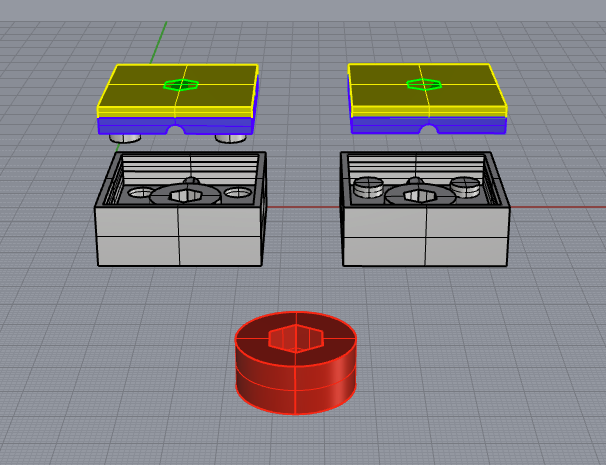
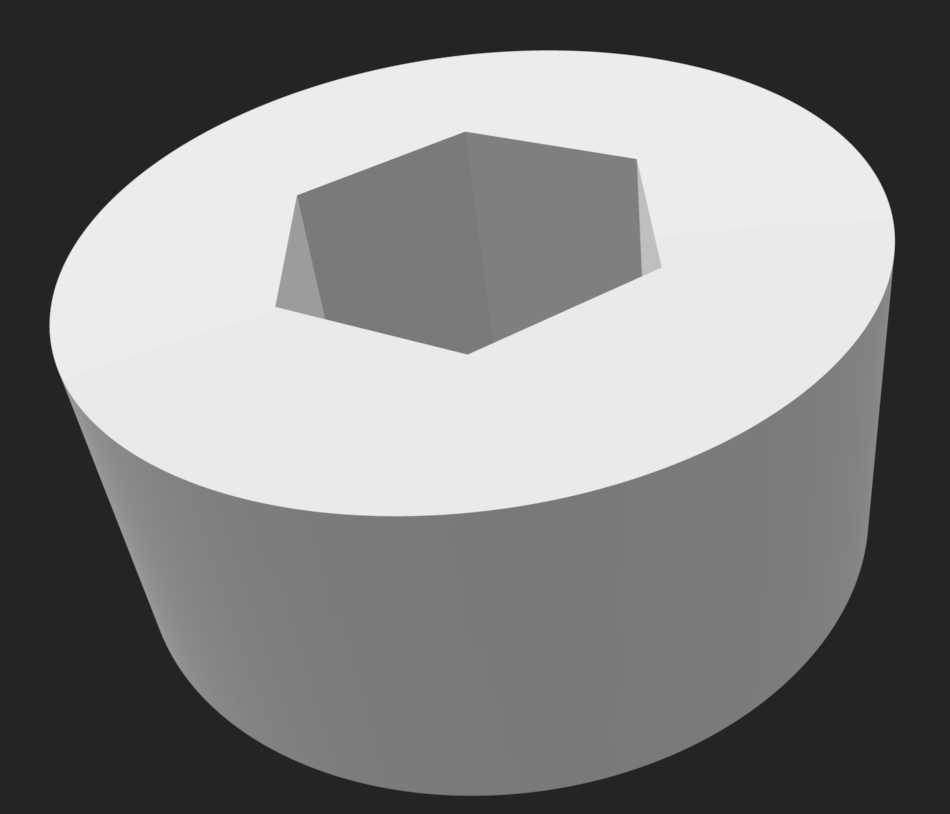
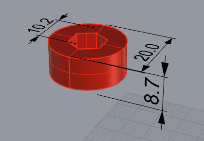
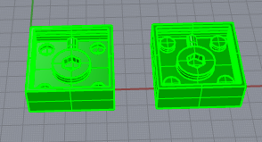
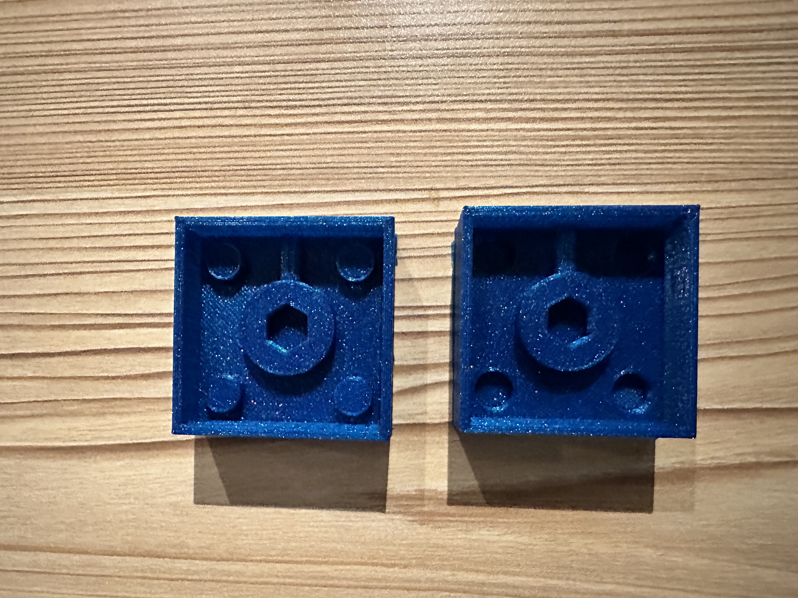

by Kefeng Wang in HCDE598
Before I start my documentation, I want to give credit to Kyle Wang, who helped me figure out how to create a 3D model for the silicon mold and further casting. The item I want to get from the molding and casting is shown below. And it would be used for my final project design.
Here are some dimensional details about the item I want after this experiment.

I started this assignment by building the silicon mold around my final out. The first step I take is to create a silicon mold around it. This step could be split into four small tasks:
1. Create the Hexagonal column in the middle of my mold.
2. Create the cube and make one big hole in the middle for the main part.
3. Adding four keys on each corner.
4. Adding the tube for injection of the hydro stone.
The second step is to build a 3D model to get the mold. This step is relatively easier than the previous step. I used the "boolean difference." to subtract the mold I created from a cube.
the 3D printing takes 2h and 20+ mins.

Here is all the documentation for assignment 6 !
you can go back to the HOME PAGE from here.